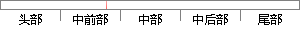

软件层的传感器则不是物理设备，其数据则是从一个或者多个硬件传感器中获取，例如线性加速度传感器。
片段位置图

相似结果|
相似片段 1：，直接测量指定的环境属性来得到它们的数据，例如加速度，磁场强度，或者角度变化。基于软件的传感器不是物理设备，而是模仿基于硬件的传感器，从一个或更多基于硬件的传感器获取它们的数据，并且有时候被称为虚拟
相似片段 2：硬件和基于软件两类传感器。 基于硬件的传感器是内嵌到手机或者平板中的物理元件，它们可以直接测量指定的环境属性来得到它们的数据。基于软件的传感器不是物理设备，它们的数据是从一个或多个基于硬件的传感器中获取
相似片段 3：是内置与手持或平板设备中的物理组件。它们通过直接测量特定的环境属性来获取数据，如加速度、磁场强或角度的变化等。基于软件的传感器不是物理设备，尽管它们模拟基于硬件的传感器。基于软件的传感器从一个或多个有时
相似片段 4：基于硬件的传感器是嵌入到手机中的一些物理元件，它们提供的数据就是所测定的物理特性，比如加速度，温度，磁场强度等等。基于软件的传感器则没有物理元件，它们一般是从一个或者多个基于硬件的传感器中获取数据
|
※ 片段修改建议 ※
近似词参考：- 设备：装备 设置装备摆设
- 或者：或 大概
- 获取：获得
- 例如：比方
系统自动生成语句：软件层的传感器则不是物理装备，其数据则是从一个或多个硬件传感器中获得，比方线性加速度传感器。
注：本片段修改建议为系统自动生成，仅供参考。